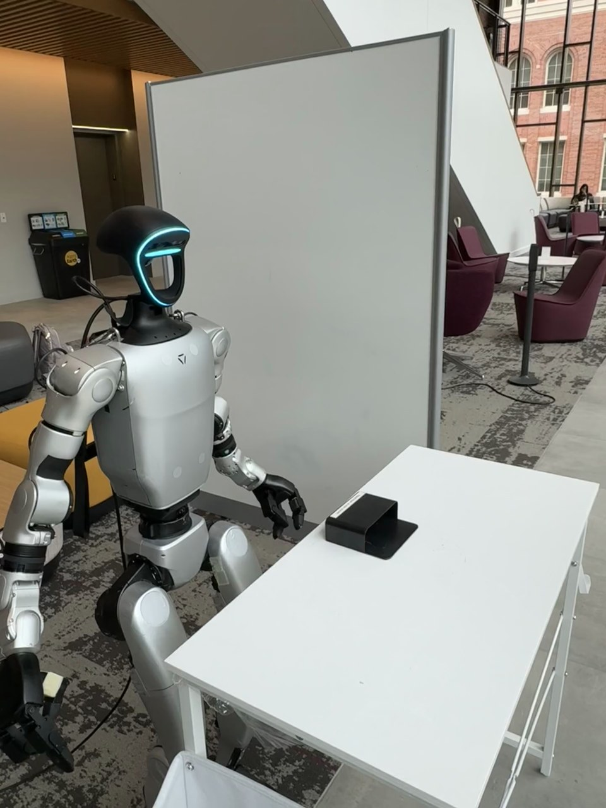

Humanoid Everyday · loco-manip-5__pick_up_container_walk_and_stick_to_whiteboard
Pick up container walk and stick to whiteboard

Visual review action_review.json
{
"prompt_protocol": "humanoid_action_v1",
"prompt_provenance": "visually_authored_from_video_and_initial_frame",
"reviewed_contact_sheets": [
"sheet_001.jpg",
"sheet_002.jpg",
"sheet_003.jpg",
"sheet_004.jpg",
"sheet_005.jpg",
"sheet_006.jpg",
"sheet_007.jpg"
],
"inspected_frame_stride": 2,
"inspected_sampled_frame_count": 396,
"initial_scene": "The humanoid stands beside a white table with a single black open container lying on the tabletop. The robot faces the camera obliquely; its left hand is nearer the container, and its right hand hangs at its side. A whiteboard is behind the robot.",
"observed_sequence": [
{
"start_frame": 0,
"end_frame": 175,
"action": "The left arm raises and extends over the tabletop. The open fingers descend toward the black container, briefly lift and reposition, then descend again. The right arm remains lowered.",
"confidence": "high"
},
{
"start_frame": 176,
"end_frame": 254,
"action": "The left hand closes around the container near its open upper edge while it remains on the tabletop; the grasp settles without assistance from the right hand.",
"confidence": "high"
},
{
"start_frame": 255,
"end_frame": 281,
"action": "The left hand lifts the container off the table and rotates it into an upright carrying orientation, exposing its flat outer/back face.",
"confidence": "high"
},
{
"start_frame": 282,
"end_frame": 319,
"action": "The robot holds the lifted container at chest height in its left hand while preparing to move.",
"confidence": "high"
},
{
"start_frame": 320,
"end_frame": 463,
"action": "Maintaining the left-hand grasp, the robot takes steps away from the table toward image left, turns its body to face the whiteboard, and advances toward it. The robot is briefly partly outside the image during the turn. The right arm remains lowered, with no hand-to-hand transfer.",
"confidence": "high"
},
{
"start_frame": 464,
"end_frame": 511,
"action": "The robot settles in front of the whiteboard, facing away from the camera. Its left arm and held object are partly hidden by the torso; the right hand remains empty at its side.",
"confidence": "high"
},
{
"start_frame": 512,
"end_frame": 727,
"action": "The left arm lifts the container across the front of the torso toward the robot's right side and presses its flat back against the whiteboard around shoulder height. Small adjustments keep the container in place while the right hand stays lowered.",
"confidence": "high"
},
{
"start_frame": 728,
"end_frame": 751,
"action": "The left fingers open and lift clear of the container, which remains on the whiteboard without visible hand support.",
"confidence": "high"
},
{
"start_frame": 752,
"end_frame": 791,
"action": "The empty left arm retracts across the body and lowers to the left side. The container stays attached to the whiteboard through the final frame.",
"confidence": "high"
}
],
"arm_hand_roles": {
"left": "Sole manipulating hand: reaches to grasp the container, lifts and carries it during locomotion, reaches across the body to press it onto the whiteboard, opens to release it, and withdraws empty.",
"right": "Remains lowered and empty throughout the task; does not stabilize the container or board and does not receive a transfer.",
"coordination": "Single-hand transport and attachment with stepping, turning, and approach to the board. No two-hand object coordination or human interaction occurs."
},
"anatomical_side_evidence": {
"confidence": "high",
"evidence": "The native source initial PNG shows the front chest plate and face. The active arm visible on image right attaches to the robot's left shoulder; the image-left arm is anatomical right. The same left arm performs the grasp and lift. After the robot turns away, the passive anatomical right arm is clearly visible on image right and remains lowered, while the left hand reaches across the front of the torso toward the board. Its final empty withdrawal emerges on the image-left/anatomical-left side.",
"uncertainty": "The torso partly occludes the left arm during the whiteboard approach and cross-body press, but continuous motion and the passive right hand establish the side."
},
"terminal_state": "The black container remains attached to the whiteboard near shoulder height, with its open compartment visible. Both hands are lowered and empty; the robot stands facing the board. The container does not fall or move away after the left hand withdraws.",
"selected_execution_status": "success",
"uncertainties": [
"Exact finger contact and the instant of initial whiteboard contact are partly occluded by the torso during the cross-body placement; the left-hand opening, empty withdrawal, and unsupported final attachment are visible. The attachment mechanism itself is not directly visible, although the original annotation calls the container magnetic."
],
"annotation_discrepancies": [],
"evidence_frame_indices": [
190,
254,
270,
282,
320,
410,
464,
532,
610,
690,
730,
746,
768,
791
],
"inspection_coverage": {
"source_frame_interval_inclusive": [
0,
791
],
"all_contact_sheets_visually_viewed": true,
"native_source_initial_png_visually_viewed": true,
"native_transition_and_final_frames_visually_viewed": [
190,
254,
270,
282,
320,
410,
464,
532,
610,
690,
730,
746,
768,
791
],
"source_view": "third_person",
"sampling": "Every second decoded frame, including sample 790; final decoded frame 791 additionally inspected at native dimensions."
},
"video_id": "loco-manip-5",
"dataset": "Humanoid_Everyday",
"dedicated_review_agent": "review_he_loco_manip_5",
"review_source_video": "Humanoid_Everyday/loco-manip-5__pick_up_container_walk_and_stick_to_whiteboard/third_person/original/original.mp4",
"source_frame_count": 792,
"source_fps": 30.0,
"native_detail_frames": [
190,
254,
270,
282,
320,
410,
464,
532,
610,
690,
730,
746,
768,
791
],
"world_model_prompt": "The humanoid grasps the black container on the table with its left hand and lifts it clear. Holding the container, it steps away from the table, turns to face the whiteboard, and walks up to it. It reaches its left hand across its body to press the container onto the board, then opens its fingers and lowers the empty hand, leaving the container attached. Keep the camera fixed; preserve robot geometry, physically valid joint motion, and normal gripper opening and closing.",
"original_task_instruction": "Picking up a magnetic container, turning around, walking towards a whiteboard, and sticking it onto the board, demonstrating complex mobile manipulation sequence.",
"selected_segment": {
"start_frame": 0,
"end_frame_exclusive": 792,
"reason": "Complete original single-task reference; no cropping or trimming requested."
},
"source_video_sha256": "b3730b876cd84c7a38d523262c299f3cc5cab658a047b055707543a803891048",
"review_completed_at": "2026-10-13T17:40:17.763897+00:00"
}